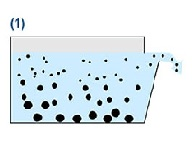
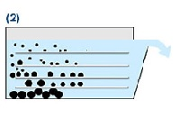
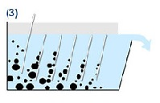

ПРОМИСЛОВІ СЕПАРАТОРИ та їх значення для виробництв
мало хто приділяє їм особливу увагу але саме вони "слідкують за якістю виробленої продукції" фіксуючи непідходящу
Сепаратор-
апарат, призначений для розділення певного продукту на фракції з різними фізичними або хімічними характеристиками — за густиною, магнітними, електричними або іншими властивостями.
принцип роботи сепаратора
В основу функционирования тарельчатого сепаратора положен принцип осаждения. В смесях с твердой и жидкой фазами тяжелые твердые вещества накапливаются на дне емкости. Они опускаются под воздействием силы тяжести.

В непрерывно работающей системе для разделения твердой и жидкой фаз не все частицы твердого вещества успевают осесть на дно. Они снова покидают систему вместе с жидкой фазой. Разделение выполнено не полностью. Для предотвращения этого используется конструкция в виде ламелей или дисков.

Сам процесс сепарации происходит в пространстве между дисками. Чем больше количество пластин или дисков, тем больше площадь осветления. Конусообразная форма пластин или дисков предотвращает их закупорку, в следствие чего частицы твердого вещества просто соскальзывают с них.

Принцип сепаратора позволяет отделять жидкости различной плотности, например, капельки масла в воде или капельки воды в масле.
Де
Використовуються
- збагачення рудних та нерудних матеріалів;
- сепарації шлаків металургійного виробництва, твердих промислових та побутових відходів;
- вилучення металів з відходів електрокабелю, електронної та радіотехніки, друкованих плат;
- розділення сумішей полімерів;
- запобігання попадання металевих домішок у продукти харчування в процесі їх виробництва;
- захисту технологічного обладнання від поломок;
- підвищення білизни фарфорових виробів;
- підвищення якості шин, ДСП, цементу, вогнетривких матеріалів, скла;
- очистки технічної води.